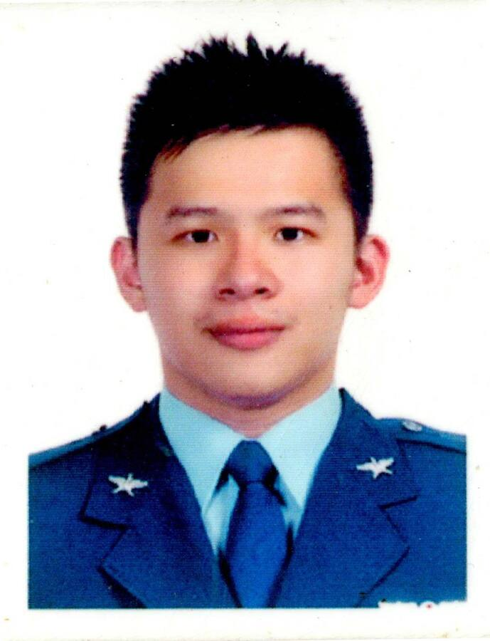

Flight Nursing Expertise
航空護理專業
建構航空護理專業的知識與理論架構，連結經驗、訓練、環境、線索辨識、臨床決策與行動。
FLIGHT NURSE OFFICER · RESEARCHER · EDUCATOR
羅翊邦｜航空護理官・護理長・護理科學家
以臨床任務為起點，推進航空護理、空中傷患後送與空勤/多重慢性病研究。

01 / PROFILE
現任三軍總醫院松山分院護理部內科病房護理長，具加護病房、急診、精神科、航空醫學與空中後送實務經驗。取得國防醫學大學醫學科學研究所博士學位，並具教育部部定講師資格。
「航空全期護理既是科學，也是藝術。」— 以有限資源，完成安全、連續且適切的照護
02 / RESEARCH FOCUS
以航空護理專業理論為基礎，回應真實任務情境中的照護、風險與決策。
Flight Nursing Expertise
建構航空護理專業的知識與理論架構，連結經驗、訓練、環境、線索辨識、臨床決策與行動。
Aeromedical Evacuation
聚焦非制式化環境中的急重症照護、任務風險評估、載運規劃與跨專業協作。
Continuum of Flight Care
從轉送前交班、鑑傷與傷患準備，延伸至航程照護，以及轉送後追蹤與回報。
Aircrew Health
探討空勤人員心血管代謝風險、生物標記與精準健康促進策略。
Shift-work Nursing
關注排班、晝夜節律、工作壓力與職業倦怠之間的關聯，支持更健康的臨床工作環境。
Multimorbidity
探討多重慢性病族群的功能、運動能力與健康促進，發展可落實於臨床與居家的介入策略。
Smart Wearables
運用穿戴式裝置與客觀資料，評估介入依從性、日常活動與個人化健康促進成效。
Activity & Sleep Monitoring
整合步數、活動強度與睡眠分期，描繪身體活動、恢復與睡眠品質的連續變化。
03 / CARE CONTINUUM
將每一段轉送視為同一條照護鏈，讓資訊、判斷與責任不中斷。
交班 · 鑑傷 · 穩定 · 載運計畫
航空生理 · 持續監測 · 緊急應變
交接 · 紀錄 · 追蹤 · 回報
04 / PUBLICATION ATLAS
沿用原網站的視覺語言，將學術成果整理成可搜尋、可篩選的研究資料圖譜。
顯示 7 篇研究；引用次數依您提供的 Google Scholar 圖片。
Yi-Pang Lo, Shang-Lin Chiang, Chieh-Yi Song, Wen-Chii Tzeng, Cheng-Chiang Chang, Chia-Huei Lin
BMC Public Health 25, 3204Yi-Pang Lo, Mei-Chen Wang, Yao-Hsiang Chen, Shang-Lin Chiang, Chia-Huei Lin
Life 15(8), 1216Yi-Pang Lo, Chia-Ying Lai, Pei-Hua Hsieh, Yu-Chen Huang, Yu-Chieh Chen, Shih-Hsiung Tsai
Journal of Medical Sciences 45(1), 7–12Yi-Pang Lo, Shang-Lin Chiang, Chia-Huei Lin
Tzu Chi Nursing Journal 20(5), 67–75Yi-Pang Lo, Shang-Lin Chiang, Chia-Huei Lin, Hung-Chang Liu, Li-Chi Chiang
International Journal of Environmental Research and Public Health 18(1), 101Shang-Lin Chiang, Chien-Lung Shen, Liang-Cheng Chen, Yi-Pang Lo, Chueh-Ho Lin, Chia-Huei Lin
Journal of Cardiovascular Nursing 35(5), 491–501羅翊邦、周汛澔、蔣立琦
源遠護理 10(1), 5–1305 / PRACTICE & EDUCATION
教學涵蓋航空生理、空中傷患鑑傷與載運計畫、冠心症與腦中風緊急後送、航空護理個案報告、實證健康照護、災難應變與急救訓練。